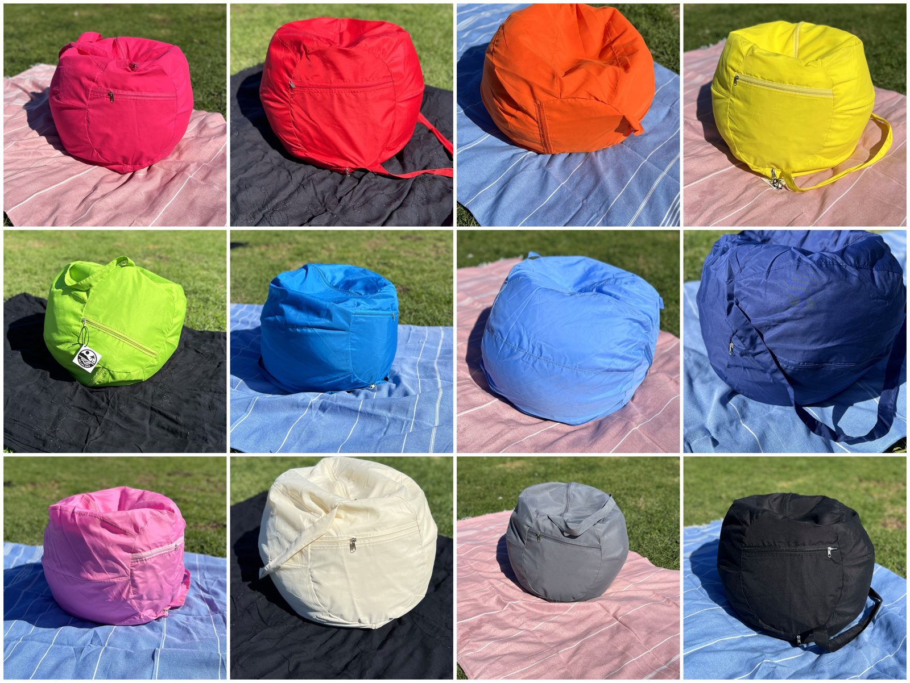
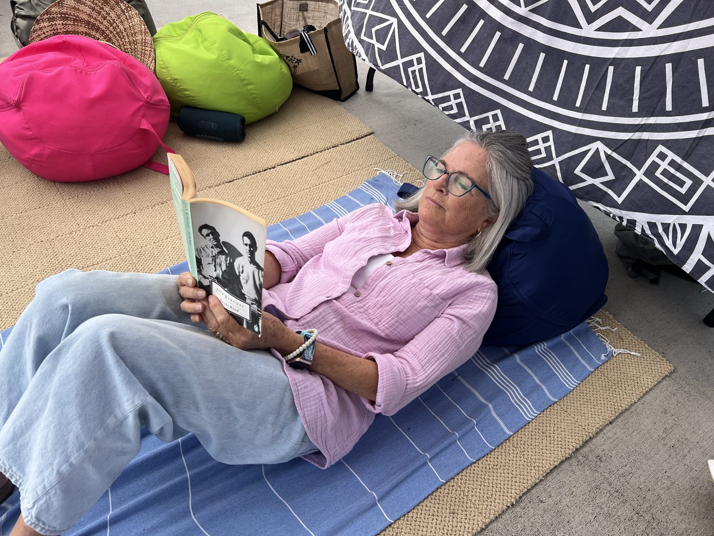
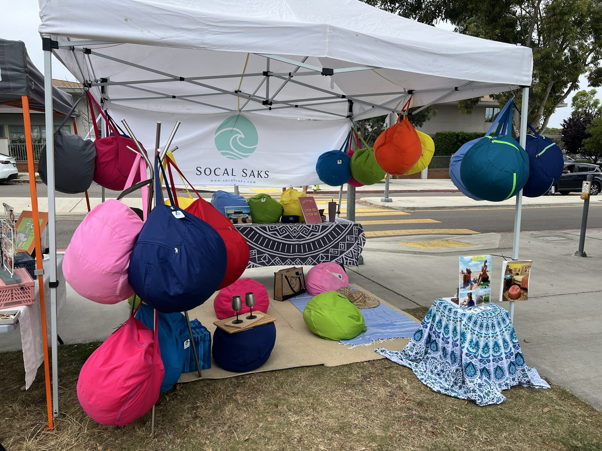
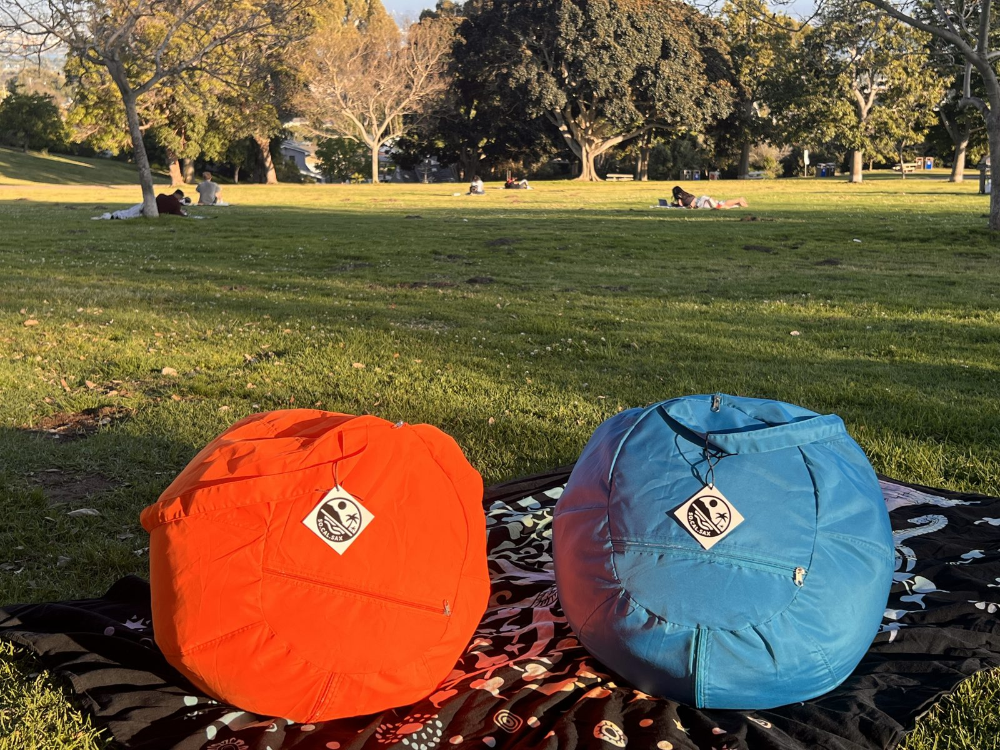
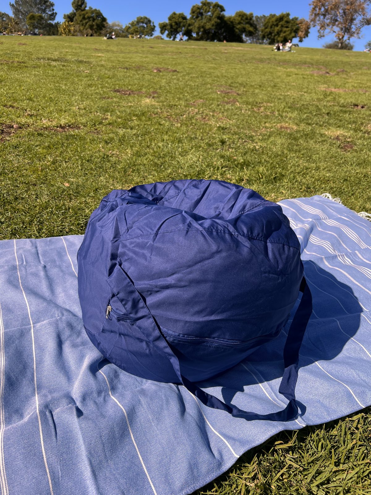
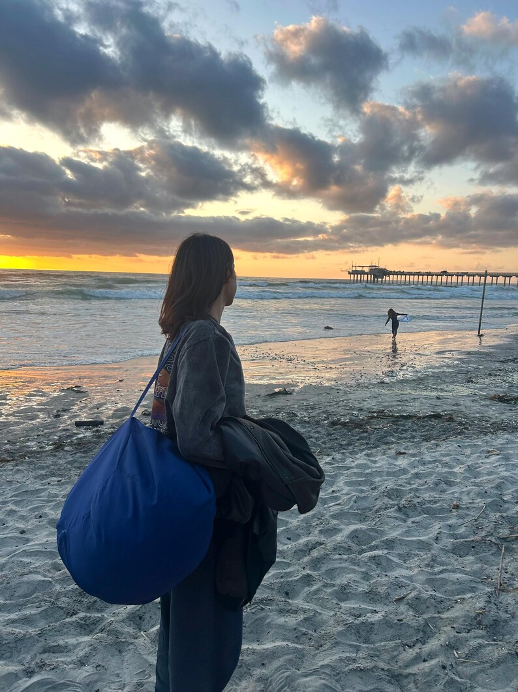

Built for the beach, made in La Jolla
SoCal Saks are handmade in San Diego. Each one slings over your shoulder, drops into the sand, and molds to your back — sit up in it, lie back on it, or use it as a headrest. Way more comfortable than a folding beach chair, and a fraction of the hassle. A zipper pocket keeps your phone, keys, and sunscreen right with you.
See them in the wild






Why a Sak instead?
| SoCal Sak | Beach chair | Inflatable lounger | |
|---|---|---|---|
| Weight | ~1.5 lb | 8–12 lb | 2–3 lb + pump hassle |
| Setup | None — drop and sit | Unfold and wrestle | Inflate every time |
| Durability | Can't pop, no frame to rust | Frames bend and rust | One sharp shell = done |
| Extras | Zipper pocket, shoulder strap, washable | — | — |
10 colors
Local pickup — La Jolla, San Diego
Skip the shipping. Pick up in La Jolla (meetups in Bird Rock, Pacific Beach, and Mission Beach too) and save with bundle pricing:
| Quantity | Price | Per ball |
|---|---|---|
| 1 | $30 | $30.00 |
| 2 | $55 | $27.50 |
| 4 | $100 | $25.00 — best for beach days: one for the whole crew |
| 6 | $135 | $22.50 |
| 10 or more | $20 each | $20.00 — great for rentals, Airbnbs & events |
How pickup works
Not local? We ship anywhere in the US — just add $20 per ball for shipping on top of the prices above (for example, one ball shipped is $30 + $20 = $50 total).
Prefer a marketplace? Find the current listings here:
Questions
How big is a SoCal Sak?
About 14 inches across when filled, and only about 1.5 lb — light enough to carry by its built-in shoulder strap along with everything else you're hauling to the beach.
Is it really waterproof?
Yes. The cover shrugs off splashes, wet sand, and pool decks, and sand brushes right off. The covers are washable, too.
How does local pickup work?
Text us with your quantity and colors, we'll agree on a time, and you pick up in La Jolla (or meet in Bird Rock, Pacific Beach, or Mission Beach). You see the product before you pay — cash, Venmo, or Zelle.
Do you ship?
Yes, anywhere in the US. Shipping is $20 per ball on top of the pickup prices — for example, one ball shipped is $50 total, four shipped are $180 total. Order through our Etsy shop or text us.
Which colors are available?
Turquoise, Hot Pink, Green, Orange, Pink, Gray, Red, Yellow, Beige, and Blue — while they last. Text us to confirm your color is in stock; with only 40 total, some colors will run out first.
Can I buy a bunch for a rental, Airbnb, or event?
Absolutely — that's our best pricing: 10 or more are $20 each with local pickup. Text us and we'll set it up.